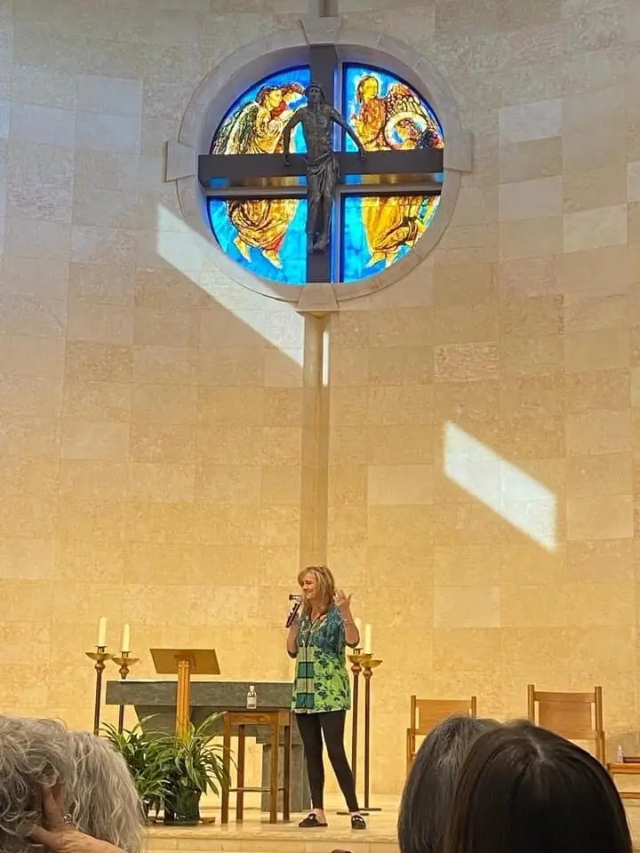
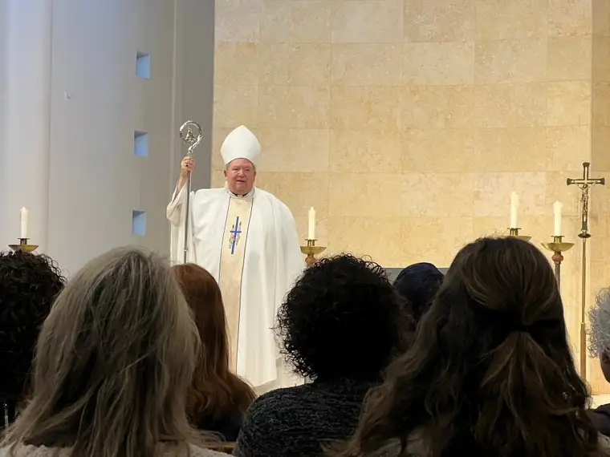
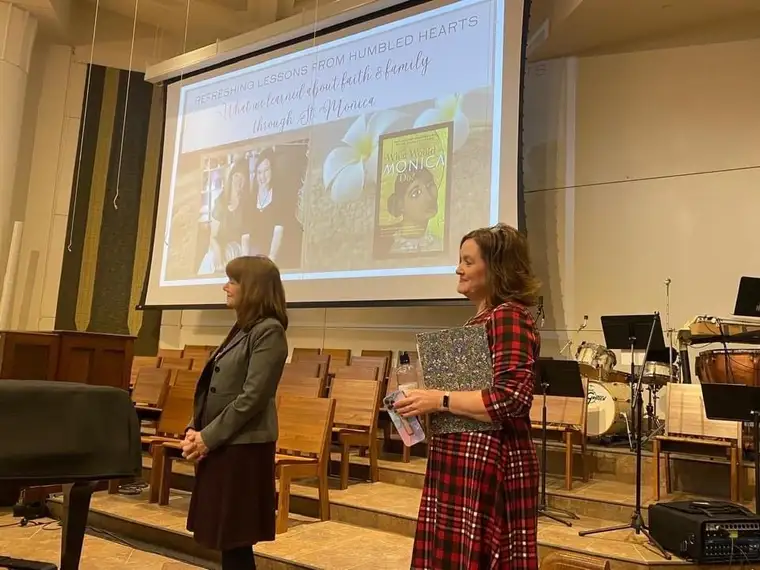

“How beautiful are the feet of those who bring good news!”
This passage from Romans 10:15 was the heart of a talk at a recent women’s conference in Wayzata, Minnesota.

The event, hosted by Women in the New Evangelization (W.I.N.E.), was themed “A Spiritual Spa: Come to the Living Waters.” The idea was to gather women of faith, worn and weary in the middle of winter, and bring them into a place of light to share our burdens, unload our yoke, and rediscover the healing touch of Christ.
The week prior, I’d come down with a serious case of the flu, and as I stepped onto the plane bound for the Twin Cities, I was barely recovered, and reeling from a concerning family situation. “How can I offer anything, Lord?” I asked God in prayer. “I have nothing. I am spent.”
By the next day, I would be speaking with a friend before 400 women in an unfamiliar parish. Somehow, I would need to find the courage to shelve my worries to offer solace to others. “Shine your light through me, Lord,” I pleaded. “I cannot do this. Only by your grace.”
Soon after arriving, I found myself at a restaurant with a core group of women, leaders and other speakers. It was a bright winter day and I could feel the sun penetrating my being. The love and embrace surrounding me provided a balm to thaw out the frozen parts of my tired soul.
We gathered again in the evening with 100 women who’d signed up for a special, pre-conference dinner event. The mood was joyful and jovial, and now, being fed spiritually and physically, I began to feel invigorated. “The Body of Christ is so amazing,” I thought.

The conference started the next morning with Mass with the archbishop. But before the opening hymn, I looked over and saw someone familiar whom I’d known from my Fargo faith community. “Is it you?” I said, in awe. “Yes! I just got back from the Holy Land last night and registered late,” she answered. “I came to see you!”
I didn’t even know she’d moved from Fargo, but this friend’s presence was a sign of life. She had no idea what I was going through, but seeing her, in the same pew of a large church, gave me the last boost I needed to do what God had called me to.

Approaching the altar, I felt the Holy Spirit carrying me to help deliver a message of love and encouragement. Afterward, with tears and other heartfelt outpouring, people shared how deeply they’d been touched by our presentation. How good is our God that we, in our brokenness, can still bring hope to others.
And that verse about the feet? It references another in the Old Testament, and is dearer to me now than ever. “How beautiful upon the mountains are the feet of the one bringing good news, announcing peace…announcing salvation, saying to Zion, ‘Your God is King!’” (Isaiah 52:7)
[For the sake of having a repository for my newspaper columns and articles, I reprint them here, with permission, a week after their run date. The preceding ran in The Forum newspaper on March 6, 2023.]